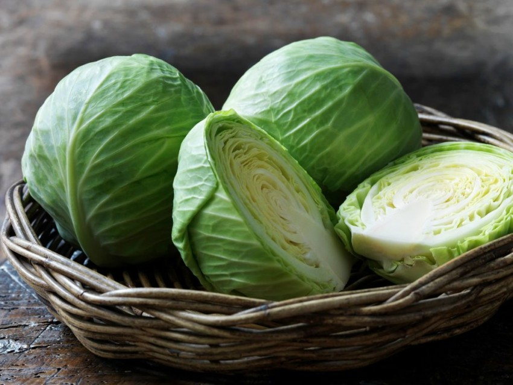
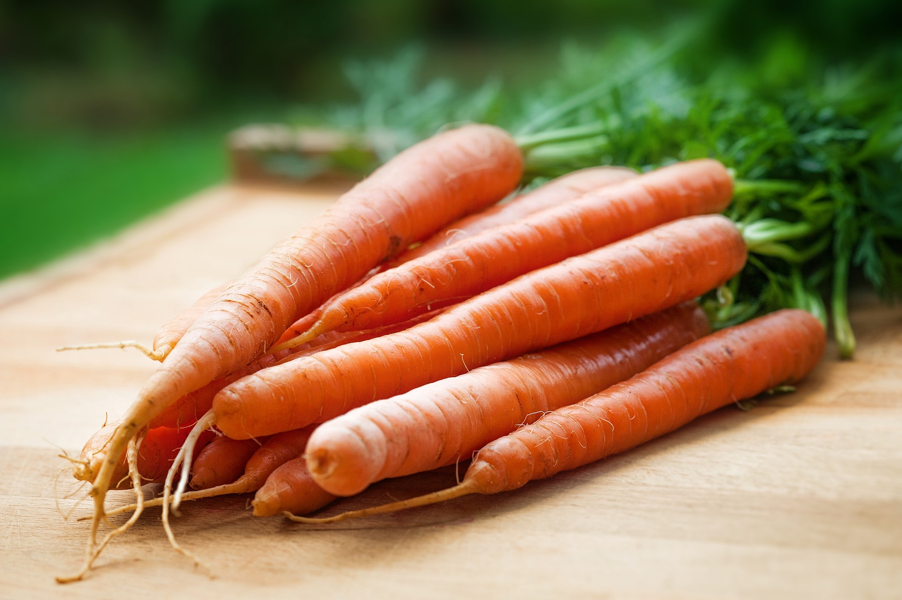
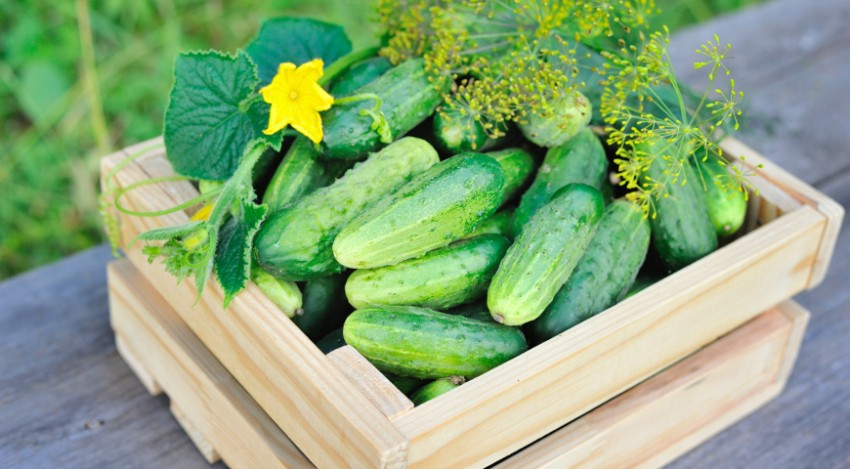
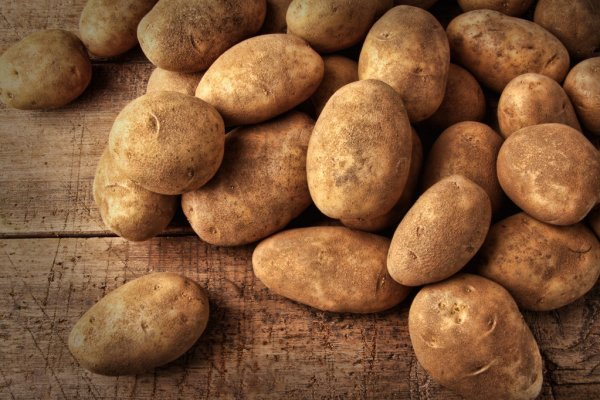
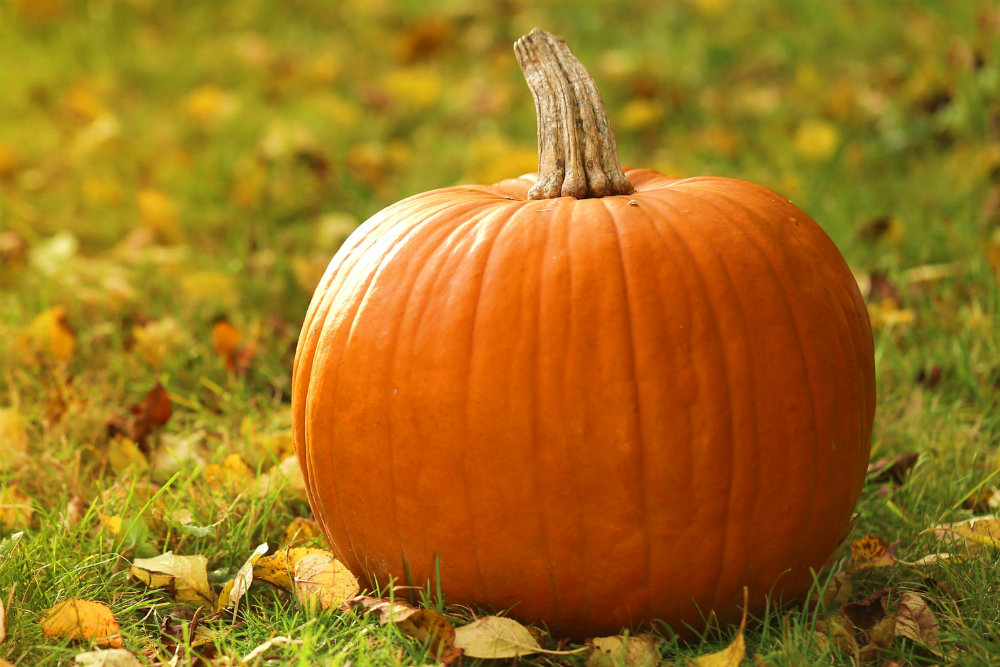
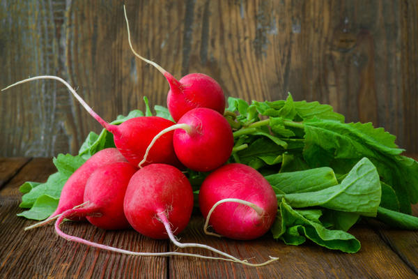
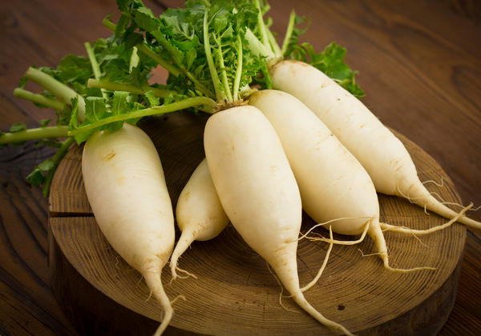
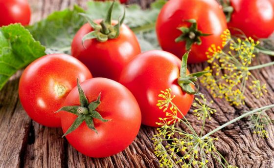
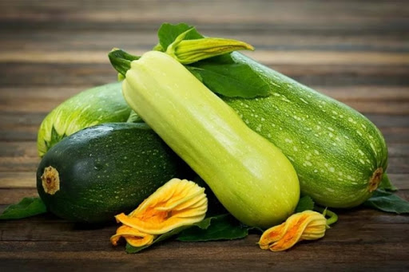

Свёкла — овощ-корнеплод, один из самых традиционных продуктов русской кухни. На Западе многие шефы считают ее символом русской кухни.
Свекла и сок из нее очень полезны при анемии, вареная свекла улучшает перистальтику кишечника, помогает при нарушении пищеварения и хронических запорах, очень полезна она при многих заболеваниях печени.

Белокочанная капуста — самая популярная капуста в нашей стране. Блюда, которые можно приготовить из капусты, разнообразны. Супы — щи и овощные похлебки, суп с фрикадельками и минестроне. Хрустящие салаты из молодой капусты с различными соусами.

Морковь – едва ли не самый популярный корнеплод после картофеля, и это не случайно: она вкусна, полезна, в ней есть все нужные человеку витамины и микроэлементы.
Морковь едят как в сыром, так и в вареном, жареном, приготовленном на пару, печеном виде. Также корнеплод добавляют в различные супы и рагу. Морковь используют для производства детского питания и корма для домашних животных.

Огурец — однолетнее травянистое растение, вид рода Огурец (Cucumis) семейства Тыквенные (Cucurbitaceae), овощная культура.
В плодах огурца содержится 94-96 % воды. Биологически активные вещества растворены в физиологически идеальной для организма человека форме. Сухого веществ огурцы накапливают всего 4-6%, из них 2% сахаров (преимущественно глюкоза и фруктоза), 0,6-1% белковых веществ и 0,5-0,7% клетчатки.
Баклажа́н — вид многолетних травянистых растений рода Паслён. Возделывается как однолетнее растение. Съедобен только плод. В ботаническом смысле это ягода, в кулинарном рассматривается как овощ. Известен также под названием бадриджа́н (редко бубриджа́н).

Карто́фель — вид многолетних клубненосных травянистых растений из рода Паслён (Solanum) семейства Паслёновые (Solanaceae). Клубни картофеля являются важным пищевым продуктом. Плоды ядовиты в связи с содержанием в них соланина.

Ты́ква — род травянистых растений семейства Тыквенные (Cucurbitaceae).
Под словом «тыква» в России обычно понимаются виды Тыква обыкновенная (Cucurbita pepo) и Тыква гигантская (Cucurbita maxima), широко распространённые и культивируемые как пищевое и кормовое растение.

Реди́с — однолетние или двулетние растения из рода Редька семейства Капустные. Редис с точки зрения классификации — группа разновидностей вида Редька посевная (Raphanus sativus).

Ре́дька — небольшой род одно- и многолетних травянистых растений семейства Капустные (Brassicaceae).
В диком виде произрастает в Европе и умеренном поясе Азии. Редька посевная (Raphanus sativus) в диком виде не встречается.

Тома́т или помидóр — однолетнее или многолетнее травянистое растение, вид рода Паслён (Solanum) семейства Паслёновые (Solanaceae). Возделывается как овощная культура; выращивается ради съедобных плодов — сочных многогнёздных ягод различной формы и окраски, также называемых томатами или помидорами.

Кабачок (уменьш. от укр. кабак, «тыква», из тюркских языков) — кустовая разновидность тыквы обыкновенной с продолговатыми плодами, без плетей. Плоды могут быть зелёного, жёлтого, чёрного или белого цвета. Мякоть нежная и быстроваркая.